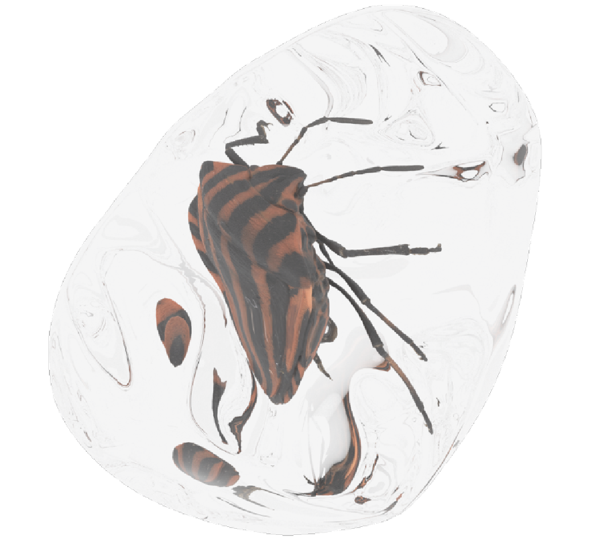
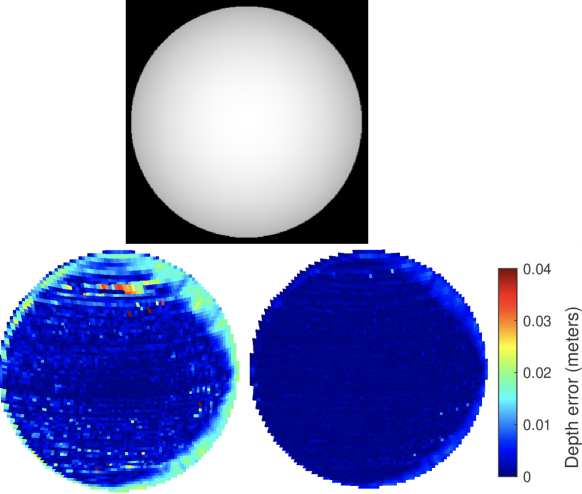
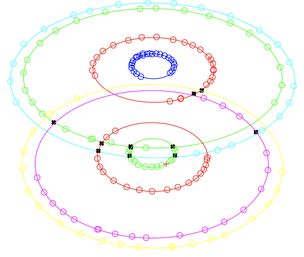

|
Baptiste Brument I'm a PhD student at IRIT in Toulouse, France, where I work on 3D reconstruction from optical images. More precisely, I'm working on the MVPS problem and neural rendering techniques. My supervisors are Lilian Calvet and Jean-Denis Durou. |

|
Research |

|
RNb-NeuS: Reflectance and Normal-based Multi-View 3D
reconstruction
Baptiste Brument*, Robin Bruneau*, Yvain Quéau, Jean Mélou, François Bernard Lauze, Jean-Denis Durou, Lilian Calvet CVPR, 2024 Project page / CVF / arXiv A versatile paradigm for integrating multi-view reflectance and normal maps acquired through photometric stereo. |
|  |
Multi-view stereo of an object immersed in a refractive medium
Robin Bruneau, Baptiste Brument, Lilian Calvet, Matthew Cassidy, Jean Mélou, Yvain Quéau, Jean-Denis Durou, François Bernard Lauze Journal of Electronic Imaging, 2024 HAL / SPIE An extended multi-view stereo technique to reconstruct objects within a transparent, refractive medium by modeling the refractive interface's geometry and solving it using a discrete method validated on synthetic and real data. |

|
Stéréophotométrie avec estimation locale de l'éclairage - Application à la reconstruction 3D du patrimoine archéologique
Benjamin Coupry, Jean Mélou, Antoine Laurent, Baptiste Brument, Pierre Gurdjos, Yvain Quéau, Jean-Denis Durou Congrès RFIAP, 2024 HAL Combinaison de photogrammétrie multi-vues et stéréophotométrie pour obtenir des reconstructions 3D à la fois précises et détaillées en estimant l'éclairage local. |
|
|
A shape-from-silhouette method for 3D reconstruction of
a convex polyhedron
Baptiste Brument, Lilian Calvet, Robin Bruneau, Jean Mélou, Simone Gasparini, Yvain Quéau, François Bernard Lauze, Jean-Denis Durou QCAV, 2023 HAL / SPIE A pipeline to recover precisely the geometry of a convex polyhedral object from multiple views under circular motion. |
|

|
Multi-view Normal Estimation -- Application to Slanted
Plane-Sweeping
Lilian Calvet, Nicolas Maignan, Baptiste Brument, Silvia Tozza, Jean-Denis Durou, Yvain Quéau SSVM, 2023 HAL / Springer The paper presents a method to estimate 3D surface normals from two views with known camera poses, enhancing inter-image homography and improving photo-consistency in the "plane-sweeping" method, |
|

|
Reconstruction 3D d'un polyèdre convexe à partir de ses
silhouettes
Baptiste Brument, Lilian Calvet, Jean Mélou, Jean-Denis Durou ORASIS, 2021 HAL Reconstruction 3D d'un objet immergé dans un milieu réfringent, en utilisant un dioptre assimilé à un polyèdre convexe placé sur une table tournante, avec l'estimation de sa géométrie à partir des silhouettes capturées par une caméra statique. |
|
It's a Jon Barron website. Last updated September 2024. |